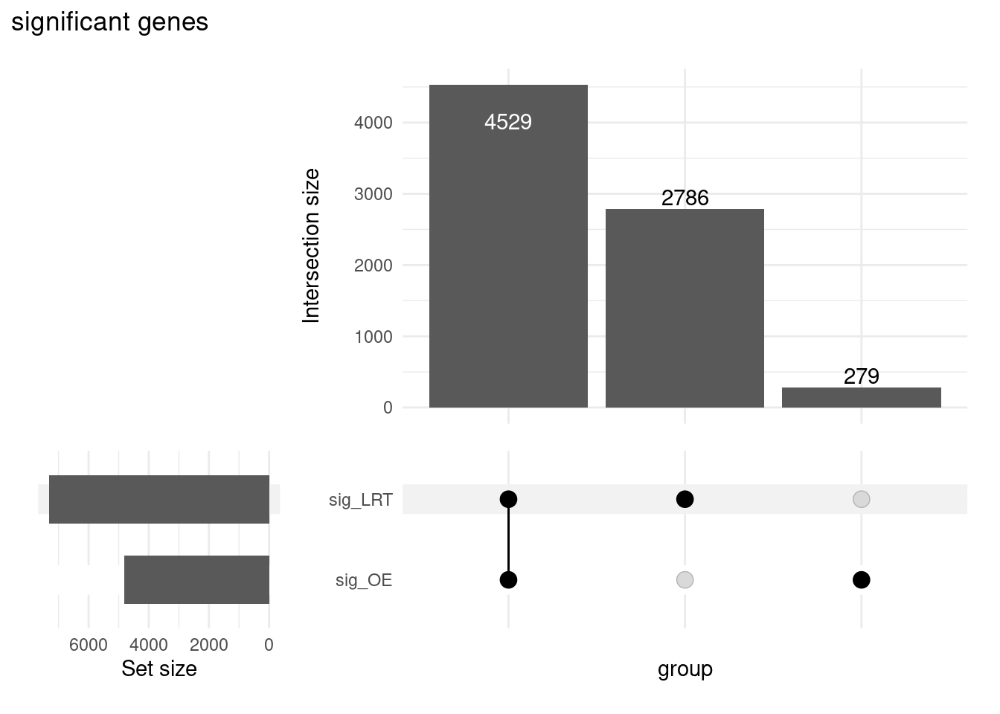
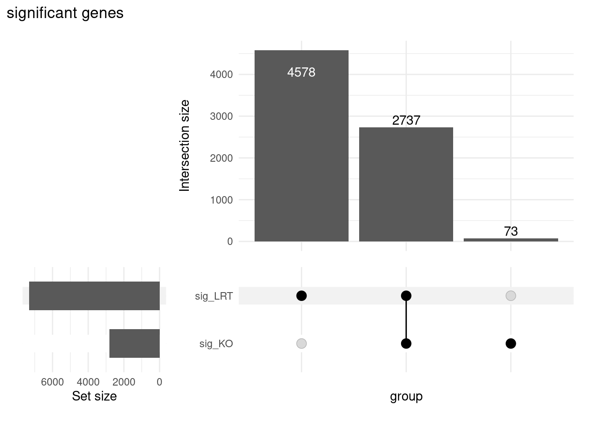

# load the libraries
library(DESeq2)
library(tidyverse)
library(RColorBrewer)
library(pheatmap)
library(tximport)
library(ggplot2)
library(ggrepel)
library(limma)
library(ashr)
library(ComplexUpset)
library(UpSetR)
library(ComplexHeatmap)
library(DEGreport)DGE analysis using LRT in DESeq2
Learning Objectives
- Apply the Likelihood Ratio Test (LRT) for hypothesis testing
- Compare results generated from the LRT to results obtained using the Wald test
- Identify shared expression profiles from the LRT significant gene list
Exploring results from the Likelihood ratio test (LRT)
DESeq2 also offers the Likelihood Ratio Test as an alternative when evaluating expression change across more than two levels. Genes which are identified as significant, are those that are changing in expression in any direction across the different factor levels.
Generally, this test will result in a larger number of genes than the individual pair-wise comparisons. While the LRT is a test of significance for differences of any level(s) of the factor, one should not expect it to be exactly equal to the union of sets of genes using Wald tests (although we do expect a high degree of overlap).
The results() table
To extract the results from our dds_lrt object we can use the same results() function we had used with the Wald test. There is no need for contrasts since we are not making a pair-wise comparison.
NOTE: In an earlier lesson on hypothesis testing, we had you create the object
dds_lrt. If you are having trouble finding the object, please run the code:dds_lrt <- DESeq(dds, test="LRT", reduced = ~ 1)
# read in the data
dds <- readRDS("../../out/object/dds_full.rds")
meta <- readRDS("../../out/object/metadata.rds")
# read in the pairwise DE analysis
res_tableOE <- readRDS("../../out/object/res_tableOE.rds")
res_tableKO <- readRDS("../../out/object/res_tableKO.rds")
### Set thresholds
padj.cutoff <- 0.05
sigOE <- res_tableOE %>%
data.frame() %>%
dplyr::filter(padj < padj.cutoff)
sigKO <- res_tableKO %>%
data.frame() %>%
dplyr::filter(padj < padj.cutoff)# Likelihood ratio test
dds_lrt <- DESeq(dds, test="LRT", reduced = ~ 1)using pre-existing size factorsestimating dispersionsfound already estimated dispersions, replacing thesegene-wise dispersion estimatesmean-dispersion relationshipfinal dispersion estimatesfitting model and testing# save the lrt object
saveRDS(dds_lrt,"../../out/object/dds_lrt.rds")
# Extract results for LRT
res_LRT <- results(dds_lrt)Let’s take a look at the results table:
res_LRTlog2 fold change (MLE): sampletype MOV10 overexpression vs control
LRT p-value: '~ sampletype' vs '~ 1'
DataFrame with 57761 rows and 6 columns
baseMean log2FoldChange lfcSE stat pvalue
<numeric> <numeric> <numeric> <numeric> <numeric>
ENSG00000000003 3525.8835 -0.438245 0.0774607 40.46117 1.63669e-09
ENSG00000000005 26.2489 0.029208 0.4411289 1.61899 4.45083e-01
ENSG00000000419 1478.2512 0.383635 0.1137610 11.34101 3.44612e-03
ENSG00000000457 518.4220 0.228971 0.1023312 14.63139 6.65018e-04
ENSG00000000460 1159.7761 -0.269138 0.0814992 25.03945 3.65387e-06
... ... ... ... ... ...
ENSG00000285889 1.82171 -4.68144 3.9266061 2.35649 0.307818323
ENSG00000285950 7.58089 -1.01978 1.0715579 1.21446 0.544857004
ENSG00000285976 4676.24904 0.19364 0.0656673 14.87806 0.000587856
ENSG00000285978 2.25697 4.13612 2.0706198 4.68720 0.095981281
ENSG00000285980 0.00000 NA NA NA NA
padj
<numeric>
ENSG00000000003 3.14070e-08
ENSG00000000005 5.88669e-01
ENSG00000000419 1.22925e-02
ENSG00000000457 3.04543e-03
ENSG00000000460 3.23416e-05
... ...
ENSG00000285889 NA
ENSG00000285950 NA
ENSG00000285976 0.00273903
ENSG00000285978 NA
ENSG00000285980 NAThe results table output looks similar to the Wald test results, with identical columns to what we observed previously.
Why are fold changes reported for an LRT test?
For analyses using the likelihood ratio test, the p-values are determined solely by the difference in deviance between the full and reduced model formula. A single log2 fold change is printed in the results table for consistency with other results table outputs, but is not associated with the actual test.
Columns relevant to the LRT test:
baseMean: mean of normalized counts for all samplesstat: the difference in deviance between the reduced model and the full modelpvalue: the stat value is compared to a chi-squared distribution to generate a pvaluepadj: BH adjusted p-values
Additional columns:
log2FoldChange: log2 fold changelfcSE: standard error
NOTE: Printed at the top of the the results table are the two sample groups used to generate the log2 fold change values that we observe in the results table. This can be controlled using the
nameargument; the value provided to name must be an element of resultsNames(dds).
# resultsNames(dds)
resultsNames(dds_lrt)[1] "Intercept"
[2] "sampletype_MOV10_knockdown_vs_control"
[3] "sampletype_MOV10_overexpression_vs_control"Identifying significant genes
When filtering significant genes from the LRT we threshold only the padj column. How many genes are significant at padj < 0.05?
# Create a tibble for LRT results
res_LRT_tb <- res_LRT %>%
data.frame() %>%
rownames_to_column(var="gene") %>%
as_tibble()
# Subset to return genes with padj < 0.05
sigLRT_genes <- res_LRT_tb %>%
dplyr::filter(padj < padj.cutoff)
# Get number of significant genes
nrow(sigLRT_genes)[1] 7315# Compare to numbers we had from Wald test
nrow(sigOE)[1] 4808nrow(sigKO)[1] 2810The number of significant genes observed from the LRT is quite high. This list includes genes that can be changing in any direction across the three factor levels (control, KO, overexpression). To reduce the number of significant genes, we can increase the stringency of our FDR threshold (padj.cutoff).
Exercise
- Compare the resulting gene list from the LRT test to the gene lists from the Wald test comparisons.
- How many of the
sigLRT_genesoverlap with the significant genes insigOE?
- How many of the
# test the intersection
intersect(sigLRT_genes$gene,rownames(sigOE)) %>% length()[1] 4529# make the upset plot
list_all_01 <- list(sig_LRT = sigLRT_genes$gene,
sig_OE = rownames(sigOE))
ComplexUpset::upset(fromList(list_all_01),
colnames(fromList(list_all_01)),wrap=T) + ggtitle("significant genes")
2. How many of the `sigLRT_genes` overlap with the significant genes in `sigKD`?# test the intersection
intersect(sigLRT_genes$gene,rownames(sigKO)) %>% length()[1] 2737# make the upset plot
list_all_02 <- list(sig_LRT = sigLRT_genes$gene,
sig_KO = rownames(sigKO))
ComplexUpset::upset(fromList(list_all_02),
colnames(fromList(list_all_02)),wrap=T) + ggtitle("significant genes")